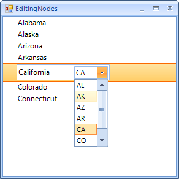

Custom Editors
By default RadTreeView uses a text box editor for editing the node Text. However, you might want to replace the default editor with your own. When an editor is invoked the EditorRequired event fires allowing the editor instance to be replaced by a custom one.
Below you will find an example on how to implement a custom editor and use it with RadTreeView.
In this example we will implement an editor, showing a US state name with text and its abbreviation in a drop down next to the text.

Our editor and its element will derive from BaseTextBoxEditor and BaseTextBoxEditorElement respectively.
In the EditorElement we will add a RadDropDownListElement. The DropDownList will be bound to the same data source as the RadTreeView control for the purpose of the example follows the EditorElement:
__[C#] __
public class CustomRadTreeViewEditorElement : BaseTextBoxEditorElement
{
private RadDropDownListElement dropDownList;
private DockLayoutPanel dockPanel;
public RadDropDownListElement DropDownList
{
get { return this.dropDownList; }
}
protected override void OnLoaded() //use OnLoaded as here the text editor will exist
{
base.OnLoaded();
if (this.Children.Contains(this.TextBoxItem))
{
this.dropDownList = new RadDropDownListElement();
this.dropDownList.DropDownStyle = RadDropDownStyle.DropDownList;
this.dropDownList.MinSize = new Size(55, 0);
this.dockPanel = new DockLayoutPanel();
this.dockPanel.LastChildFill = true;
this.Children.Add(this.dockPanel);
this.dockPanel.Children.Add(this.dropDownList);
DockLayoutPanel.SetDock(this.dropDownList, Telerik.WinControls.Layouts.Dock.Right);
this.Children.Remove(this.TextBoxItem);
this.dockPanel.Children.Add(this.TextBoxItem);
}
}
}
__[VB] __
Public Class CustomRadTreeViewEditorElement
Inherits BaseTextBoxEditorElement
Private m_dropDownList As RadDropDownListElement
Private dockPanel As DockLayoutPanel
Public ReadOnly Property DropDownList() As RadDropDownListElement
Get
Return Me.m_dropDownList
End Get
End Property
Protected Overrides Sub OnLoaded()
'use OnLoaded as here the text editor will exist
MyBase.OnLoaded()
If Me.Children.Contains(Me.TextBoxItem) Then
Me.m_dropDownList = New RadDropDownListElement()
Me.m_dropDownList.DropDownStyle = RadDropDownStyle.DropDownList
Me.m_dropDownList.MinSize = New Size(55, 0)
Me.dockPanel = New DockLayoutPanel()
Me.dockPanel.LastChildFill = True
Me.Children.Add(Me.dockPanel)
Me.dockPanel.Children.Add(Me.m_dropDownList)
DockLayoutPanel.SetDock(Me.m_dropDownList, Telerik.WinControls.Layouts.Dock.Right)
Me.Children.Remove(Me.TextBoxItem)
Me.dockPanel.Children.Add(Me.TextBoxItem)
End If
End Sub
End Class
The EditorElement encapsulates the visual appearance of the element, we will need the actual editor which will encapsulate the functionality:
__[C#] __
public class CustomRadTreeViewEditor : BaseTextBoxEditor
{
protected override RadElement CreateEditorElement()
{
return new CustomRadTreeViewEditorElement();
}
public new CustomRadTreeViewEditorElement EditorElement
{
get { return base.EditorElement as CustomRadTreeViewEditorElement; }
}
public override bool EndEdit()
{
this.EditorElement.DropDownList.SelectedValueChanged -= DropDownList_SelectedIndexChanged;
return base.EndEdit();
}
public override void BeginEdit()
{
base.BeginEdit();
TreeNodeElement nodeElement = this.OwnerElement as TreeNodeElement;
this.EditorElement.DropDownList.BindingContext = new BindingContext();
this.EditorElement.DropDownList.DataSource = nodeElement.TreeViewElement.DataSource;
this.EditorElement.DropDownList.DisplayMember = nodeElement.TreeViewElement.ValueMember;
this.EditorElement.DropDownList.ValueMember = nodeElement.TreeViewElement.DisplayMember;
this.EditorElement.DropDownList.SelectedIndex = this.EditorElement.DropDownList.FindStringExact(nodeElement.Data.Value.ToString());
this.Value = nodeElement.Data.Text;
this.EditorElement.DropDownList.SelectedIndexChanged += DropDownList_SelectedIndexChanged;
}
void DropDownList_SelectedIndexChanged(object sender, Telerik.WinControls.UI.Data.PositionChangedEventArgs e)
{
TreeNodeElement nodeElement = this.OwnerElement as TreeNodeElement;
nodeElement.Data.Value = this.EditorElement.DropDownList.Items[e.Position].Text;
this.Value = this.EditorElement.DropDownList.Items[e.Position].Value;
}
}
__[VB] __
Public Class CustomRadTreeViewEditor
Inherits BaseTextBoxEditor
Protected Overrides Function CreateEditorElement() As RadElement
Return New CustomRadTreeViewEditorElement()
End Function
Public Shadows ReadOnly Property EditorElement() As CustomRadTreeViewEditorElement
Get
Return TryCast(MyBase.EditorElement, CustomRadTreeViewEditorElement)
End Get
End Property
Public Overrides Function EndEdit() As Boolean
RemoveHandler Me.EditorElement.DropDownList.SelectedValueChanged, AddressOf DropDownList_SelectedIndexChanged
Return MyBase.EndEdit()
End Function
Public Overrides Sub BeginEdit()
MyBase.BeginEdit()
Dim nodeElement As TreeNodeElement = TryCast(Me.OwnerElement, TreeNodeElement)
Me.EditorElement.DropDownList.BindingContext = New BindingContext()
Me.EditorElement.DropDownList.DataSource = nodeElement.TreeViewElement.DataSource
Me.EditorElement.DropDownList.DisplayMember = nodeElement.TreeViewElement.ValueMember
Me.EditorElement.DropDownList.ValueMember = nodeElement.TreeViewElement.DisplayMember
Me.EditorElement.DropDownList.SelectedIndex = Me.EditorElement.DropDownList.FindStringExact(nodeElement.Data.Value.ToString())
Me.Value = nodeElement.Data.Text
AddHandler Me.EditorElement.DropDownList.SelectedIndexChanged, AddressOf DropDownList_SelectedIndexChanged
End Sub
Private Sub DropDownList_SelectedIndexChanged(sender As Object, e As Telerik.WinControls.UI.Data.PositionChangedEventArgs)
Dim nodeElement As TreeNodeElement = TryCast(Me.OwnerElement, TreeNodeElement)
nodeElement.Data.Value = Me.EditorElement.DropDownList.Items(e.Position).Text
Me.Value = Me.EditorElement.DropDownList.Items(e.Position).Value
End Sub
End Class
Now all that is left is to drag a RadTreeView to a form, populate it with data and enable the custom editor.
__[C#] __
public EditingNodes()
{
InitializeComponent();
DataTable table = new DataTable();
table.Columns.Add("Abbreviation");
table.Columns.Add("State");
table.Rows.Add("AL", "Alabama");
table.Rows.Add("AK", "Alaska");
table.Rows.Add("AZ", "Arizona");
table.Rows.Add("AR", "Arkansas");
table.Rows.Add("CA", "California");
table.Rows.Add("CO", "Colorado");
table.Rows.Add("CT", "Connecticut");
this.Controls.Add(this.radTreeView1);
this.radTreeView1.AllowEdit = true;
this.radTreeView1.DataSource = table;
this.radTreeView1.DisplayMember = "State";
this.radTreeView1.ValueMember = "Abbreviation";
this.radTreeView1.EditorRequired += TreeViewEditorRequired;
}
private void TreeViewEditorRequired(object sender, TreeNodeEditorRequiredEventArgs e)
{
e.EditorType = typeof(CustomRadTreeViewEditor);
}
__[VB] __
Public Sub New()
InitializeComponent()
Dim table As New DataTable()
table.Columns.Add("Abbreviation")
table.Columns.Add("State")
table.Rows.Add("AL", "Alabama")
table.Rows.Add("AK", "Alaska")
table.Rows.Add("AZ", "Arizona")
table.Rows.Add("AR", "Arkansas")
table.Rows.Add("CA", "California")
table.Rows.Add("CO", "Colorado")
table.Rows.Add("CT", "Connecticut")
Me.Controls.Add(Me.radTreeView1)
Me.radTreeView1.AllowEdit = True
Me.radTreeView1.DataSource = table
Me.radTreeView1.DisplayMember = "State"
Me.radTreeView1.ValueMember = "Abbreviation"
AddHandler Me.radTreeView1.EditorRequired, AddressOf TreeViewEditorRequired
End Sub
Private Sub TreeViewEditorRequired(sender As Object, e As TreeNodeEditorRequiredEventArgs)
e.EditorType = GetType(CustomRadTreeViewEditor)
End Sub